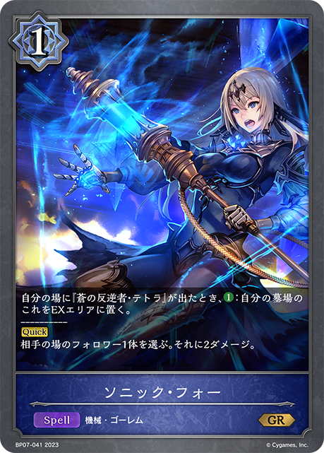
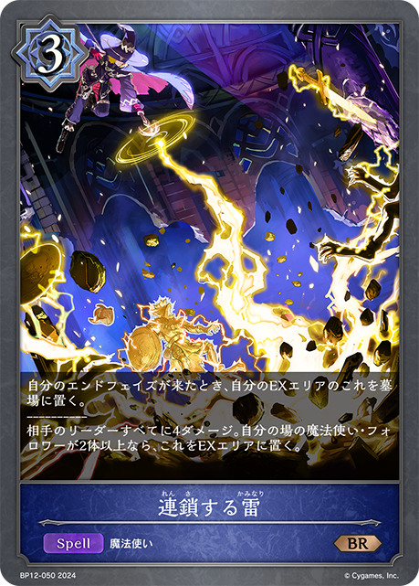
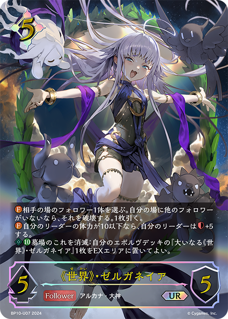
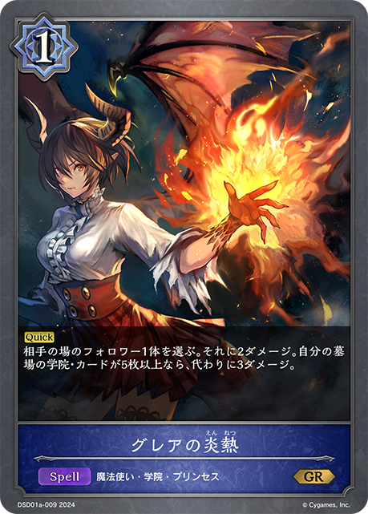

1 ハセガワ
1/43｜2026/08/01
47RCR
多了哪些牌
 +1
+1 +1
+1 +1
+1 +1
+1少了哪些牌
 -2
-2 -2
-2 主BP08-051/BP08-P12：破壊の愉悦主卡组 × 3
主BP08-051/BP08-P12：破壊の愉悦主卡组 × 3 主BP15-054：破壊の隠者主卡组 × 3
主BP15-054：破壊の隠者主卡组 × 3 主BP20-045/PR-552：殲滅の歌声主卡组 × 3
主BP20-045/PR-552：殲滅の歌声主卡组 × 3 主BP20-055/BP20-P29：破壊の荒野主卡组 × 3主BP05-045/BP05-P19：白の章・黒の章主卡组 × 2主BP05-048/BP05-P22：破壊の従者主卡组 × 2
主BP20-055/BP20-P29：破壊の荒野主卡组 × 3主BP05-045/BP05-P19：白の章・黒の章主卡组 × 2主BP05-048/BP05-P22：破壊の従者主卡组 × 2 主BP15-045/BP15-P09：舞い戻る奏絶主卡组 × 3
主BP15-045/BP15-P09：舞い戻る奏絶主卡组 × 3 主BP15-049：奏絶の崇拝者主卡组 × 2主BP15-113/BP15-SL29/BP15-SP02：干絶の飢餓・ギルネリーゼ主卡组 × 2
主BP15-049：奏絶の崇拝者主卡组 × 2主BP15-113/BP15-SL29/BP15-SP02：干絶の飢餓・ギルネリーゼ主卡组 × 2 主BP20-037/BP20-SL09：奏絶の顕現・リーシェナ主卡组 × 3
主BP20-037/BP20-SL09：奏絶の顕現・リーシェナ主卡组 × 3 主BP20-040/BP20-SL12：破壊の継承者・アクシア主卡组 × 3
主BP20-040/BP20-SL12：破壊の継承者・アクシア主卡组 × 3 主BP20-048/PR-547：破壊の祈祷者主卡组 × 3
主BP20-048/PR-547：破壊の祈祷者主卡组 × 3 主BP08-050：破壊の狂信者主卡组 × 3
主BP08-050：破壊の狂信者主卡组 × 3 主BP15-039/BP15-SL11/PR-418：奏絶の破壊・リーシェナ主卡组 × 3
主BP15-039/BP15-SL11/PR-418：奏絶の破壊・リーシェナ主卡组 × 3 主BP05-037/BP05-SL09/BP05-U03/BP20-PR01：破壊の絶傑・リーシェナ主卡组 × 2进BP05-049/BP05-P23：破壊の従者进化 × 2
主BP05-037/BP05-SL09/BP05-U03/BP20-PR01：破壊の絶傑・リーシェナ主卡组 × 2进BP05-049/BP05-P23：破壊の従者进化 × 2 进BP15-040/BP15-SL12：奏絶の破壊・リーシェナ进化 × 3进BP15-114/BP15-SL30/BP15-U07/SCS01-009：干絶の飢餓・ギルネリーゼ进化 × 2
进BP15-040/BP15-SL12：奏絶の破壊・リーシェナ进化 × 3进BP15-114/BP15-SL30/BP15-U07/SCS01-009：干絶の飢餓・ギルネリーゼ进化 × 2 进BP20-041/BP20-SL13/BP20-U04：破壊の継承者・アクシア进化 × 3+1+1+1+1-2-2
进BP20-041/BP20-SL13/BP20-U04：破壊の継承者・アクシア进化 × 3+1+1+1+1-2-2 +1+1
+1+1 +1+1+1-2-2-1+1+1+1+1+1-2-2-1+1+1-1-1+1-1+1-1+1+1+1-2-1+1-1+1+1+1+1+1-3-1-1+1+1+1+1+1-2-2-1+1-1
+1+1+1-2-2-1+1+1+1+1+1-2-2-1+1+1-1-1+1-1+1-1+1+1+1-2-1+1-1+1+1+1+1+1-3-1-1+1+1+1+1+1-2-2-1+1-1 +1+1+1+1+1-2-2-1+1+1+1-1-1-1+1-1+1-1+1+1+1+1-2-2+1+1+1+1+1-2-2-1+1+1+1-1-1-1+1-1+1
+1+1+1+1+1-2-2-1+1+1+1-1-1-1+1-1+1-1+1+1+1+1-2-2+1+1+1+1+1-2-2-1+1+1+1-1-1-1+1-1+1 +1+1+1+1-2-2-1+1-1+1-1+1+1+1+1+1-2-2-1+1+1+1-1-1-1+1
+1+1+1+1-2-2-1+1-1+1-1+1+1+1+1+1-2-2-1+1+1+1-1-1-1+1 +1+1+1+1-2-2-1+1-1
+1+1+1+1-2-2-1+1-1
+3+1+1-3-1-1+1+1-1-1+1 +1+1+1-2-2+1+1+1+1+1-2-2-1+1+1+1+1-2-2
+1+1+1-2-2+1+1+1+1+1-2-2-1+1+1+1+1-2-2 +3
+3 +1+1
+1+1 +1+1+1+1
+1+1+1+1
+1-2-2-1-1+1-1+1-1+1+1+1
+1-2-2 +1-1+1+1-2+1+1+1+1+1-2-2-1
+1-1+1+1-2+1+1+1+1+1-2-2-1
+2-1-1+1-1+2-1-1| 图片 | 平均张数 | 使用率 | 0张比例 | 1张比例 | 2张比例 | 3张比例 |
|---|---|---|---|---|---|---|
|
3.00 | 100.0% | 0.0% | 0.0% | 0.0% | 100.0% |
|
3.00 | 100.0% | 0.0% | 0.0% | 0.0% | 100.0% |
|
3.00 | 100.0% | 0.0% | 0.0% | 0.0% | 100.0% |
|
3.00 | 100.0% | 0.0% | 0.0% | 0.0% | 100.0% |
|
3.00 | 100.0% | 0.0% | 0.0% | 0.0% | 100.0% |
|
3.00 | 100.0% | 0.0% | 0.0% | 0.0% | 100.0% |
|
3.00 | 100.0% | 0.0% | 0.0% | 0.0% | 100.0% |
|
2.98 | 100.0% | 0.0% | 0.0% | 2.2% | 97.8% |
|
2.98 | 100.0% | 0.0% | 0.0% | 2.2% | 97.8% |
|
2.62 | 100.0% | 0.0% | 2.2% | 33.3% | 64.4% |
|
2.22 | 97.8% | 2.2% | 8.9% | 53.3% | 35.6% |
|
1.31 | 97.8% | 2.2% | 64.4% | 33.3% | 0.0% |
|
2.82 | 95.6% | 4.4% | 0.0% | 4.4% | 91.1% |
|
2.20 | 95.6% | 4.4% | 4.4% | 57.8% | 33.3% |
|
1.40 | 68.9% | 31.1% | 4.4% | 57.8% | 6.7% |
|
0.24 | 22.2% | 77.8% | 20.0% | 2.2% | 0.0% |
|
0.04 | 4.4% | 95.6% | 4.4% | 0.0% | 0.0% |
| 0.07 | 2.2% | 97.8% | 0.0% | 0.0% | 2.2% | |
|
0.07 | 2.2% | 97.8% | 0.0% | 0.0% | 2.2% |
| 0.04 | 2.2% | 97.8% | 0.0% | 2.2% | 0.0% | |
|
0.02 | 2.2% | 97.8% | 2.2% | 0.0% | 0.0% |
| 0.02 | 2.2% | 97.8% | 2.2% | 0.0% | 0.0% | |
| 0.02 | 2.2% | 97.8% | 2.2% | 0.0% | 0.0% | |
| 0.02 | 2.2% | 97.8% | 2.2% | 0.0% | 0.0% |
| 图片 | 平均张数 | 使用率 | 0张比例 | 1张比例 | 2张比例 | 3张比例 |
|---|---|---|---|---|---|---|
|
3.00 | 100.0% | 0.0% | 0.0% | 0.0% | 100.0% |
|
2.91 | 100.0% | 0.0% | 0.0% | 8.9% | 91.1% |
|
2.31 | 95.6% | 4.4% | 0.0% | 55.6% | 40.0% |
|
1.40 | 68.9% | 31.1% | 4.4% | 57.8% | 6.7% |
|
0.18 | 17.8% | 82.2% | 17.8% | 0.0% | 0.0% |
|
0.04 | 4.4% | 95.6% | 4.4% | 0.0% | 0.0% |
|
0.04 | 4.4% | 95.6% | 4.4% | 0.0% | 0.0% |
|
0.02 | 2.2% | 97.8% | 2.2% | 0.0% | 0.0% |
|
0.02 | 2.2% | 97.8% | 2.2% | 0.0% | 0.0% |
|
0.02 | 2.2% | 97.8% | 2.2% | 0.0% | 0.0% |
| 0.02 | 2.2% | 97.8% | 2.2% | 0.0% | 0.0% | |
|
0.02 | 2.2% | 97.8% | 2.2% | 0.0% | 0.0% |